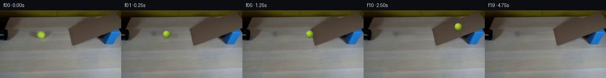
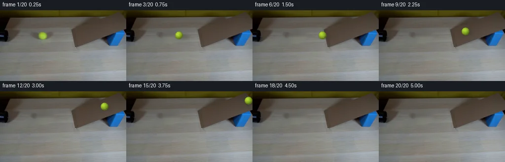
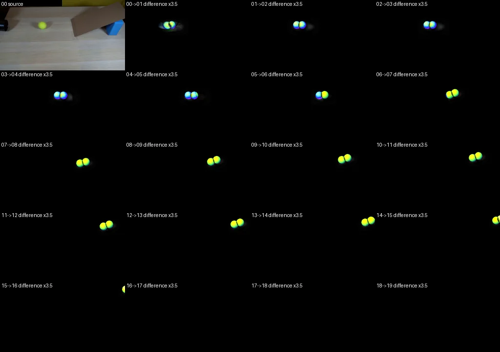

V0 · 初版 · 最终提交
![]()
Observable Generation Trace
把最终像素视频、Harness 冻结的每轮候选、真实工具事件和 Agent 自述放在同一页。可观测证据与模型自述分开标记，避免把“模型说它检查过”误当成真实工具调用。
![首帧]()
Static locked-off single-shot with fixed frame throughout filmed with constant framerate in real-time. The scene shows a realistic scientific demonstration. The scene only contains the described setup and actions. A simple ramp made of cardboard, propped up by a blue block on a light-colored wooden table. There's a black pipe to the left of the frame that directly points towards it. The yellow tennis ball rolls straight out of the black pipe onto the ramp.
首帧显示在左侧播放器初始画面。Track 权限、隔离和 tensor 一致性来自 run manifest，而不是 METHOD.md。
默认勾选初版和最终版；可选其他版本一起同步播放。仅检查图更新的连续重复快照已合并，回退旧视频仍保留为一次修订。
Observable events
来源：events.jsonl + run manifest
视觉工具可用，但 events.jsonl 没有记录到成功的输出 PNG 读取；存在 self-refine 候选，不等于存在可验证的视觉 self-refine。
Frozen candidates
每张图来自该 round 的真实 00 / 01 / 05 / 10 / 19 帧

pixels 260b4e207457a76b · code d55b4d9efcbd78da
--- previous/generate.py +++ current/generate.py @@ -0,0 +1,191 @@ +from pathlib import Path + +import cv2 +import numpy as np +from PIL import Image, ImageDraw, ImageFont + +from artifact_io import save + + +ROOT = Path(__file__).resolve().parent +W, H = 256, 144 + + +def remove_initial_ball(source): + """Restore the table beneath the supplied ball with local Telea inpainting.""" + mask = np.zeros((H, W), np.uint8) + # Includes the green sphere and its broad, soft shadow, but no apparatus. + cv2.ellipse(mask, (91, 52), (23, 12), 0, 0, 360, 255, -1) + restored = cv2.inpaint(source[:, :, ::-1], mask, 6, cv2.INPAINT_TELEA) + restored = restored[:, :, ::-1] + + # Preserve the table's horizontal character by softly mixing the fill with + # row-wise interpolation between unaffected pixels on either side. + row_fill = restored.copy().astype(np.float32) + for y in range(40, 65): + left = source[y, 66].astype(np.float32) + right = source[y, 116].astype(np.float32) + for x in range(67, 116): + q = (x - 66) / 50.0 + linear = left * (1.0 - q) + right * q + # Telea retains small local grain; the interpolation prevents a + # circular inpaint halo around the former shadow. + row_fill[y, x] = 0.72 * restored[y, x] + 0.28 * linear + feather = cv2.GaussianBlur(mask, (0, 0), 2.2).astype(np.float32) / 255.0 + feather = feather[:, :, None] + out = source.astype(np.float32) * (1.0 - feather) + row_fill * feather + return np.clip(out, 0, 255).astype(np.uint8) + + +def blend_shadow(image, cx, cy, on_ramp=False): + alpha = np.zeros((H, W), np.float32) + if on_ramp: + cv2.ellipse(alpha, (int(round(cx + 3)), int(round(cy + 4))), + (10, 4), -18, 0, 360, 0.28, -1) + alpha = cv2.GaussianBlur(alpha, (0, 0), 1.7) + # Shadow may only land on the cardboard plane. + plane = np.zeros((H, W), np.uint8) + polygon = np.array([[145, 35], [243, 4], [255, 16], + [255, 36], [153, 75]], np.int32) + cv2.fillPoly(plane, [polygon], 255) + alpha *= plane.astype(np.float32) / 255.0 + shadow_color = np.array([47, 43, 35], np.float32) + else: + cv2.ellipse(alpha, (int(round(cx + 7)), int(round(cy + 3))), + (15, 5), 0, 0, 360, 0.23, -1) + alpha = cv2.GaussianBlur(alpha, (0, 0), 2.8) + shadow_color = np.array([54, 48, 40], np.float32) + a = alpha[:, :, None] + result = image.astype(np.float32) * (1.0 - a) + shadow_color * a + return np.clip(result, 0, 255).astype(np.uint8) + + +def draw_ball(image, cx, cy, rotation, radius=7.6): + """Draw a softly antialiased, shaded tennis ball with a rotating seam.""" + pad = int(np.ceil(radius + 3)) + x0 = max(0, int(np.floor(cx)) - pad) + x1 = min(W, int(np.floor(cx)) + pad + 1) + y0 = max(0, int(np.floor(cy)) - pad) + y1 = min(H, int(np.floor(cy)) + pad + 1) + if x0 >= x1 or y0 >= y1: + return image + + yy, xx = np.mgrid[y0:y1, x0:x1].astype(np.float32) + px = xx + 0.5 - cx + py = yy + 0.5 - cy + distance = np.sqrt(px * px + py * py) + # Soft, slightly fuzzy silhouette similar to the defocused source ball. + edge_noise = 0.13 * np.sin(xx * 2.31 + yy * 1.77) + alpha = np.clip(radius + 0.75 + edge_noise - distance, 0.0, 1.0) + inside = distance < radius + nx = px / radius + ny = py / radius + nz = np.sqrt(np.clip(1.0 - nx * nx - ny * ny, 0.0, 1.0)) + + # Fixed upper-left illumination while the seam rotates with the sphere. + lambert = np.clip(-0.34 * nx - 0.42 * ny + 0.84 * nz, 0.0, 1.0) + brightness = 0.54 + 0.48 * lambert … diff truncated; 104 more lines …
Final visual checks
Harness 保存的最终产物


Agent claims
以下文字由生成 Agent 撰写，不等同于工具证据
Frame 00 is copied byte-for-byte from first_frame.png. The ball is already just beyond the pipe, moving right.
| Frame | Time | Ball action |
|---|---|---|
| 00 | 0.00 s | Exact supplied first frame; ball centered around (86,51). |
| 01 | 0.25 s | Rolls straight right on the table to about (96,51). |
| 02 | 0.50 s | Continues straight to about (107,51). |
| 03 | 0.75 s | Continues toward ramp, about (118,51). |
| 04 | 1.00 s | Nears the ramp entry, about (130,51). |
| 05 | 1.25 s | Reaches the ramp entry, about (142,51). |
| 06 | 1.50 s | Contacts and begins climbing, about (153,50). |
| 07 | 1.75 s | Rolls up the cardboard slope, about (164,46). |
| 08 | 2.00 s | Climbs to about (176,43). |
| 09 | 2.25 s | Climbs to about (188,39). |
| 10 | 2.50 s | Climbs to about (200,35). |
| 11 | 2.75 s | Climbs to about (212,31). |
| 12 | 3.00 s | Climbs to about (224,27). |
| 13 | 3.25 s | Approaches the upper/right edge, about (236,23). |
| 14 | 3.50 s | Partly leaves frame at the raised end, about (248,19). |
| 15 | 3.75 s | Last small visible sliver at the right boundary. |
| 16 | 4.00 s | Ball has exited; apparatus remains still. |
| 17 | 4.25 s | Static locked-off apparatus. |
| 18 | 4.50 s | Static locked-off apparatus. |
| 19 | 4.75 s | Static locked-off apparatus. |
The ball graphic will rotate as it translates. Its table shadow is broad and soft; once on the ramp, the shadow tightens and aligns down-right along the cardboard surface. The original ball and shadow are restored with a locally sampled/inpainted table patch in frames 01..19 before drawing the ball at its new position.
The animation is a deterministic local Python pixel composite built from the supplied first_frame.png; no outside images, models, masks, engines, or references are used.
artifact_io.save writes the 20 PNGs, packed uint32 tensor, contact sheet, and standalone player. generate.py additionally writes an amplified adjacent-frame difference sheet and reopens every artifact to verify frame 00 equality, PNG equality, dimensions, dtype, and exact 0xRRGGBB packing.